Free consultation / second opinion
相談・セカンドオピニオン受付中
この文章はダミーです。文字の大きさ、量、字間、行間等を確認するために入れています。この文章はダミーです。文字の大きさ、量、字間、行間等を確認するために入れています。この文章はダミーです。文字の大きさ、
積み上げた技術と経験を
還元する
「可能な限り美しく」、そして「再治療にならない治療」。
これが私の診療に対する考え方。
これは保険診療でも保険外診療でも変わりはありません。
歯に対する考え方は人それぞれだと思いますが、
この考えに共感していただける方、是非、私に治療させていただきたい。
これまで培ってきた知識・技術はそのために存在します。
台場フロンティアデンタルクリニック 院長 飯島 茂
台場フロンティアデンタルクリニック
院長 飯島 茂
Reasons to be
Chosen
当院が
選ばれる
理由
納得していただくまで、しっかり説明
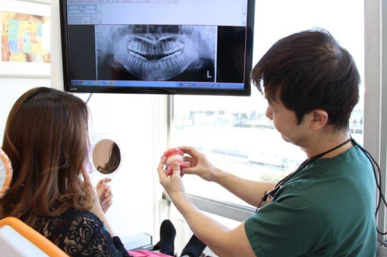
この文章はダミーです。文字の大きさ、量、字間、行間等を確認するために入れています。この文章はダミーです。文字の大きさ、量、字間、行間等を確認するために入れています。この文章はダミーです。文字の大きさ、量、字間、行間等を確認するために入れています。この文章はダミーです。文字の大きさ、 量、字間、行間等を確認するために入れています。この文章はダミーです。文字の大きさ、量、字間、行間等を確認するために入れています。この文章はダミーです。文字の大きさ、量、字間、行間等を確認するために入れています。この文章
個室診療室完備
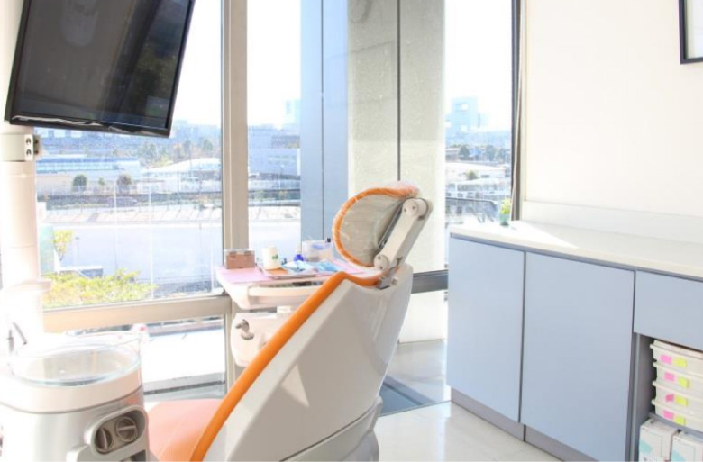
この文章はダミーです。文字の大きさ、量、字間、行間等を確認するために入れています。この文章はダミーです。文字の大きさ、量、字間、行間等を確認するために入れています。この文章はダミーです。文字の大きさ、量、字間、行間等を確認するために入れています。この文章はダミーです。文字の大きさ、 量、字間、行間等を確認するために入れています。この文章はダミーです。文字の大きさ、量、字間、行間等を確認するために入れています。この文章はダミーです。文字の大きさ、量、字間、行間等を確認するために入れています。この文章

総合治療に対応
この文章はダミーです。文字の大きさ、量、字間、行間等を確認するために入れています。この文章はダミーです。文字の大きさ、量、字間、行間等を確認するために入れています。この文章はダミーです。文字の大きさ、量、字間、行間等を確認するために入れています。この文章はダミーです。文字の大きさ、 量、字間、行間等を確認するために入れています。この文章はダミーです。文字の大きさ、量、字間、行間等を確認するために入れています。この文章はダミーです。文字の大きさ、量、字間、行間等を確認するために入れています。この文章
当院のこだわりPolicy

可能な限り、
痛くない・削らない
この文章はダミーです。文字の大きさ、量、字間、行間等を確認するために入れています。この文章はダミーです。文字の大きさ、量、字間、行間等を確認するために入れています。この文章はダミーです。文字の大きさ、量、字間、 行間等を確認するために入れています。この文章はダミーです。文字の大きさ、量、字間、行間等を確認するために入れています。この文章はダミーです。文字の大きさ、量、字間、行間等を確認するために入れています。この文章はダミー です。文字の大きさ、量、字間、行間等を確認するために入れています。この文章
先端歯科治療の技術研鑽
この文章はダミーです。文字の大きさ、量、字間、行間等を確認するために入れています。この文章はダミーです。文字の大きさ、量、字間、行間等を確認するために入れています。この文章はダミーです。文字の大きさ、量、字間、 行間等を確認するために入れています。この文章はダミーです。文字の大きさ、量、字間、行間等を確認するために入れています。この文章はダミーです。文字の大きさ、量、字間、行間等を確認するために入れています。この文章はダミー です。文字の大きさ、量、字間、行間等を確認するために入れています。この文章
マイクロスコープによる
精密治療
この文章はダミーです。文字の大きさ、量、字間、行間等を確認するために入れています。この文章はダミーです。文字の大きさ、量、字間、行間等を確認するために入れています。この文章はダミーです。文字の大きさ、量、字間、 行間等を確認するために入れています。この文章はダミーです。文字の大きさ、量、字間、行間等を確認するために入れています。この文章はダミーです。文字の大きさ、量、字間、行間等を確認するために入れています。この文章はダミー です。文字の大きさ、量、字間、行間等を確認するために入れています。この文章
診療案内Service
マイクロスコープによる
精密治療
この文章はダミーです。文字の大きさ、量、字間、行間等を確認するために入れています。この文章はダミーです。文字の大きさ、量、字間、行間等を確認するために入れています。この文章はダミーです。文字の大きさ、量、字間、行間等を確認するために入れてい
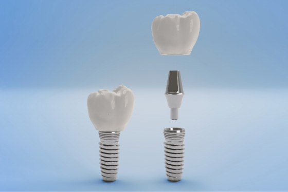
インプラント
この文章はダミーです。文字の大きさ、量、字間、行間等を確認するために入れています。この文章はダミーです。文字の大きさ、量、字間、行間等を確認するために入れています。この文章はダミーです。文字の大きさ、量、字間、行間等を確認するために入れてい
矯正歯科
この文章はダミーです。文字の大きさ、量、字間、行間等を確認するために入れています。この文章はダミーです。文字の大きさ、量、字間、行間等を確認するために入れています。この文章はダミーです。文字の大きさ、量、字間、行間等を確認するために入れてい
審美的治療・
ホワイトニング
この文章はダミーです。文字の大きさ、量、字間、行間等を確認するために入れています。この文章はダミーです。文字の大きさ、量、字間、行間等を確認するために入れています。この文章はダミーです。文字の大きさ、量、字間、行間等を確認するために入れてい
こんなお悩みありませんか？Trouble
インプラント
にしたい
抜歯したくない
目立たない
矯正がしたい
歯を白くしたい
白くて綺麗な
被せ物にしたい
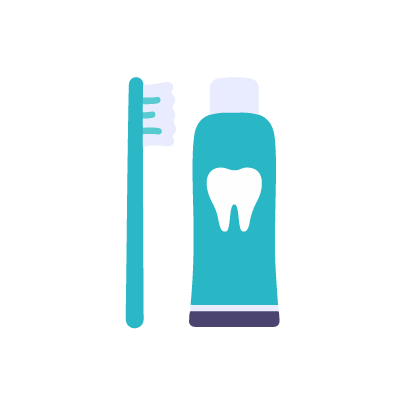
むし歯を
予防したい
抜歯したくない
目立たない
矯正がしたい
歯を白くしたい
白くて綺麗な
被せ物にしたい
台場フロンティア
デンタルクリニックの
ドクターDoctor
「自分が患者様だったら・・」を考え、説明に十分な時間をとり、
患者様が納得いく最善の治療を心がけております。
この文章はダミーです。文字の大きさ、量、字間、行間等を確認するために入れています。この文章はダミーです。文字の大きさ、量、字間、行間等を確認するために入れています。この文章はダミーです。文字の大きさ、量、字間、 行間等を確認するために入れています。この文章はダミーです。文字の大きさ、量、字間、行間等を確認するために入れています。この文章はダミーです。文字の大きさ、量、字間、行間等を確認するために入れています。この文章はダミー です。文字の大きさ、量、字間、行間等を確認するために入れています。この文章
Profile経歴
この文章はダミーです。文字の大きさ、量、字間、行間等を確認するために入れています。この文章はダミーです。文字の大きさ、量、字間、行間等を確認するために入れています。この文章はダミーです。文字の大きさ、量、字間、行間等を確認するために入れています。この文章はダミーです。文字の大きさ、量、字間、行間等を確認するために入れています。この文章はダミーです。文字の大きさ、量、字間、行間等を確認するために入れています。この文章はダミーです。文字の大きさ、量、字間、行間等を確認するために入れています。この文章
院内・設備Clinic
- 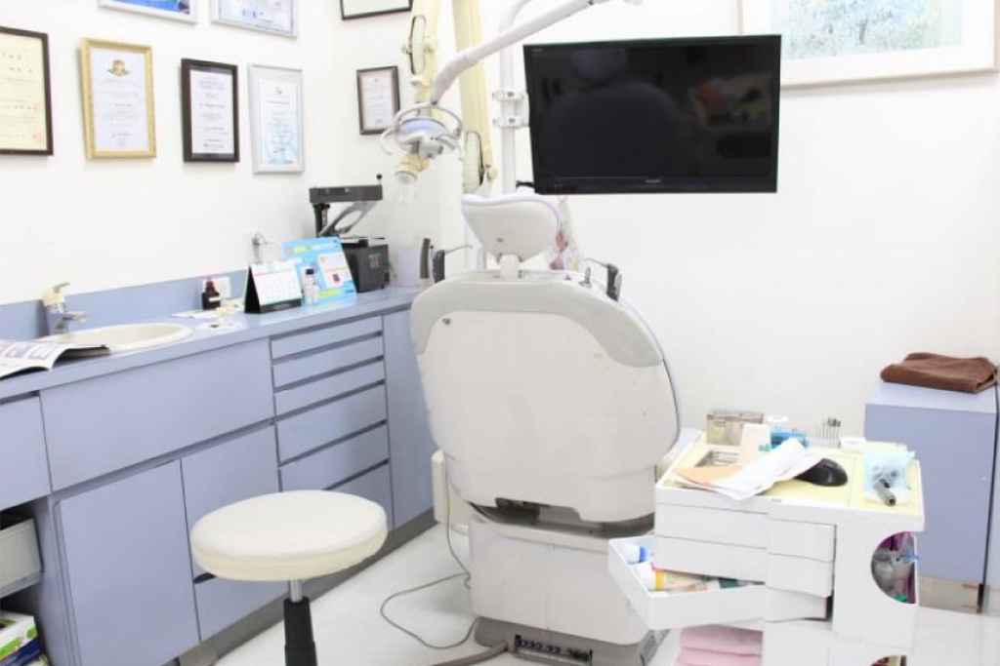

- 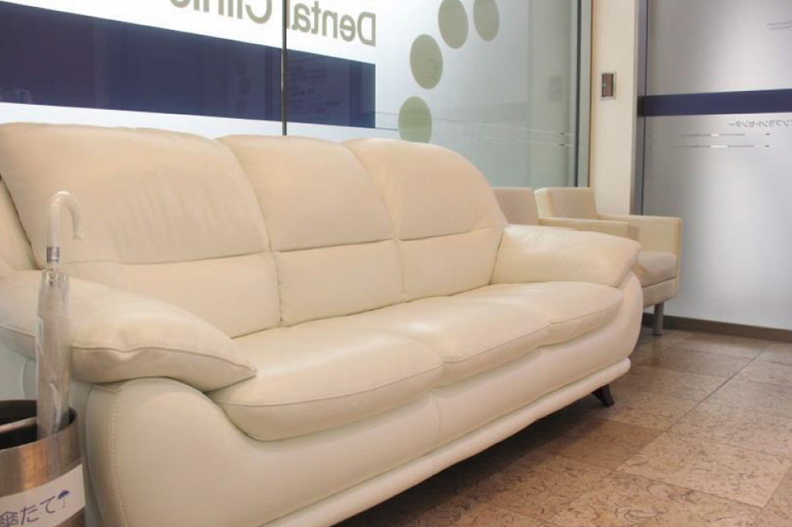
受付
この文章はダミーです。文字の大きさ、量、字間、行間等を確認するために入れています。この文章はダミーです。文字の大きさ、量、字間、行間等を確認するために入れています。この文章はダミーです。文字の大きさ、
Clinic outline医院情報
院名
台場フロンティアデンタルクリニック
所在地
〒135-0091 東京都港区台場2-3-2 台場フロンティアビル2F
TEL
03-5500-3531
URL
https://daiba-shika.jp/
院名
飯島 茂
診療科目
一般歯科(むし歯、歯周病、小児歯科)、根管治療、予防治療、審美治療・ホワイトニング、矯正治療、インプラント